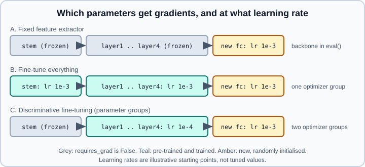

Transfer Learning & Fine-Tuning
|
This content was generated with the assistance of AI and should be verified against the official documentation before being relied on in production. |
Training a large network from random initialization needs a lot of data and compute. Transfer learning starts from a network already trained on a large dataset (usually ImageNet for images) and adapts it to your task, which typically needs far less data and time. This page is the PyTorch implementation guide: how to swap the final layer, how to freeze and unfreeze parameters correctly, how to give different layers different learning rates, and how to fine-tune a detection model. The concepts (why early layers transfer, when to fine-tune, domain shift, foundation models) are in Transfer Learning, Fine-Tuning & Foundation Models and are not repeated here. Weights and transforms are explained in torchvision.
Examples target Python 3.13 and PyTorch 2.15 with torchvision and follow the official transfer learning and object detection fine-tuning tutorials. The snippets were run on Python 3.13 with PyTorch 2.15 and torchvision 0.29 (CPU) on 2026-10-31; they download the pretrained weights on first use.

The official recipe: two strategies
The PyTorch tutorial "Transfer Learning for Computer Vision" (last updated January 2025) classifies ants versus bees with a ResNet-18 pre-trained on ImageNet, using about 120 training and 75 validation images per class. It compares the two classic strategies:
-
Fine-tuning: load the pre-trained network, replace the last layer and train all parameters.
-
Fixed feature extractor: freeze every pre-trained parameter (
requires_grad = False), replace the last layer and train only that layer.
The core of both, taken from the tutorial:
import torch
import torch.nn as nn
import torch.optim as optim
import torchvision
from torch.optim import lr_scheduler
from torchvision import models
# A. Fine-tuning: all parameters are trained
model_ft = models.resnet18(weights="IMAGENET1K_V1")
model_ft.fc = nn.Linear(model_ft.fc.in_features, 2)
optimizer_ft = optim.SGD(model_ft.parameters(), lr=0.001, momentum=0.9)
# B. Fixed feature extractor: only the new fc layer is trained
model_conv = torchvision.models.resnet18(weights="IMAGENET1K_V1")
for param in model_conv.parameters():
param.requires_grad = False
model_conv.fc = nn.Linear(model_conv.fc.in_features, 2) # new layer: requires_grad is True by default
optimizer_conv = optim.SGD(model_conv.fc.parameters(), lr=0.001, momentum=0.9)
criterion = nn.CrossEntropyLoss()
scheduler = lr_scheduler.StepLR(optimizer_ft, step_size=7, gamma=0.1) # lr x 0.1 every 7 epochsThe tutorial’s data download is https://download.pytorch.org/tutorial/hymenoptera_data.zip (extract to data/hymenoptera_data), the training transforms are RandomResizedCrop(224), RandomHorizontalFlip(), ToTensor() and ImageNet Normalize, and the validation transforms are Resize(256), CenterCrop(224), ToTensor() and Normalize. It runs 25 epochs and reports a best validation accuracy of about 0.954 for fine-tuning and about 0.961 for the fixed feature extractor, with the feature extractor taking less time. On such a tiny dataset the two are comparable; do not read the ordering as a general rule. The training loop keeps the best validation checkpoint in a temporary directory and reloads it with weights_only=True; see Saving & Loading Models.
The tutorial still builds its transforms from ToTensor(). The current transform API is v2 (ToImage plus ToDtype(scale=True)), and the cleanest preprocessing for a pre-trained model is weights.transforms(); both are explained in torchvision. The string "IMAGENET1K_V1" is the older checkpoint; new work usually starts from weights="DEFAULT" (an alias for the best available weights, which can change between releases) or an explicit IMAGENET1K_V2 member.
Replacing the head for different architectures
The attribute holding the classifier differs by model family. Print the model (print(model)) and look at the last module, or use the pattern for common families:
import torch.nn as nn
from torchvision import models
num_classes = 5
m = models.resnet50(weights="DEFAULT")
m.fc = nn.Linear(m.fc.in_features, num_classes)
m = models.mobilenet_v3_large(weights="DEFAULT")
m.classifier[-1] = nn.Linear(m.classifier[-1].in_features, num_classes)
m = models.efficientnet_b0(weights="DEFAULT")
m.classifier[-1] = nn.Linear(m.classifier[-1].in_features, num_classes)
m = models.convnext_tiny(weights="DEFAULT")
m.classifier[-1] = nn.Linear(m.classifier[-1].in_features, num_classes)
m = models.vit_b_16(weights="DEFAULT")
m.heads.head = nn.Linear(m.heads.head.in_features, num_classes)Source: https://docs.pytorch.org/vision/stable/models.html (builders); attribute names come from the torchvision model source, so confirm them with print(model) for the exact version you use.
The new layer is created with random weights and requires_grad=True, so it is trainable even after you froze everything else. If the old head is a stack of layers (as in MobileNet and EfficientNet) replacing only its last linear layer keeps the intermediate pre-trained layers.
Freezing correctly
Freezing is requires_grad_(False) on the parameters you do not want to train. The pitfalls are in what freezing does not do.
Batch normalization still updates in train mode
requires_grad=False stops gradients, but a BatchNorm layer in train() mode still updates its running mean and variance from every batch, which quietly changes a "frozen" backbone. Put the frozen part in eval mode, and re-apply it after each call to model.train():
import torch.nn as nn
def freeze(module: nn.Module) -> None:
for p in module.parameters():
p.requires_grad_(False)
module.eval()
def set_train_mode(model, frozen: nn.Module) -> None:
model.train() # puts every submodule, including frozen ones, in train mode
frozen.eval() # so switch the frozen part back
backbone = nn.Sequential(*list(model.children())[:-1]) # everything but the head, for a ResNet
freeze(backbone)
set_train_mode(model, backbone)Source: https://docs.pytorch.org/docs/stable/notes/autograd.html (requires_grad) and https://docs.pytorch.org/docs/stable/generated/torch.nn.modules.batchnorm.BatchNorm2d.html
When a layer is both frozen and in eval mode its output is deterministic, which is also what makes feature caching possible (below). Small batches make BatchNorm statistics noisy; if you must fine-tune with a batch of 2 to 4, keep the batch-norm layers in eval mode even for the trainable layers, or use a model with GroupNorm or LayerNorm. See Training Deep Networks.
Give the optimizer only trainable parameters
Passing frozen parameters to the optimizer is harmless for SGD without weight decay (they have no gradient and are skipped), but it wastes memory for optimizers with state, and weight decay or momentum implementations can behave differently depending on the optimizer. Filter explicitly:
params = [p for p in model.parameters() if p.requires_grad]
optimizer = optim.AdamW(params, lr=1e-3, weight_decay=1e-2)
print(sum(p.numel() for p in params), "trainable parameters")Changing requires_grad after the optimizer exists works for unfreezing only if the newly trainable parameters are in an optimizer group (see gradual unfreezing); add them with optimizer.add_param_group.
Speeding up a fixed feature extractor
If the whole backbone is frozen and in eval mode, you can run it under torch.no_grad() (or torch.inference_mode()) so no activations are stored for the backward pass, and you can even compute the features once, cache them to disk and train a small head on the cached tensors. That is much faster, but it is only valid without random augmentation of the images, because the features no longer change per epoch.
import torch
@torch.no_grad()
def extract(model_without_head, loader, device):
model_without_head.eval().to(device)
feats, ys = [], []
for x, y in loader:
feats.append(model_without_head(x.to(device)).flatten(1).cpu())
ys.append(y)
return torch.cat(feats), torch.cat(ys)Source: https://docs.pytorch.org/docs/stable/notes/autograd.html (grad modes; see no_grad, inference_mode & Grad Modes)
The cached features can then train a logistic regression with scikit-learn or a single nn.Linear for many epochs in seconds.
Fine-tuning with different learning rates
Pre-trained layers need small updates, the new head needs larger ones. PyTorch optimizers accept a list of parameter groups, each a dictionary with its own hyperparameters:
import torch.optim as optim
from torchvision import models
import torch.nn as nn
model = models.resnet50(weights="DEFAULT")
model.fc = nn.Linear(model.fc.in_features, 10)
stem = [model.conv1, model.bn1]
for m in stem:
for p in m.parameters():
p.requires_grad_(False)
backbone_params = [p for n, p in model.named_parameters()
if p.requires_grad and not n.startswith("fc.")]
head_params = list(model.fc.parameters())
optimizer = optim.AdamW([
{"params": backbone_params, "lr": 1e-4},
{"params": head_params, "lr": 1e-3},
], weight_decay=1e-2)
for g in optimizer.param_groups:
print(len(g["params"]), g["lr"])Source: https://docs.pytorch.org/docs/stable/optim.html (per-parameter options)
Schedulers see all groups: StepLR, CosineAnnealingLR and OneCycleLR scale every group, and OneCycleLR takes a list of max_lr values, one per group. See Learning-Rate Schedulers & SWA/EMA. A usual recipe is a short warm-up, then cosine decay, with the backbone rate about 10 times smaller than the head rate; treat the numbers above as starting points to tune, not recommendations that hold for every dataset (see Optimizers & Learning-Rate Schedules).
Gradual unfreezing
A robust schedule trains the head first with the backbone frozen, then unfreezes the last stage, then earlier ones, each with a smaller learning rate:
def unfreeze(module, optimizer, lr):
new = [p for p in module.parameters() if not p.requires_grad]
for p in new:
p.requires_grad_(True)
if new:
optimizer.add_param_group({"params": new, "lr": lr})
# epochs 0-2: head only (everything else frozen)
# epoch 3: unfreeze(model.layer4, optimizer, lr=1e-4)
# epoch 6: unfreeze(model.layer3, optimizer, lr=5e-5)Remember to keep the still-frozen BatchNorm layers in eval mode and to call model.train() followed by the freezing helper every epoch. When a model compiled with torch.compile changes which parameters require gradients it may recompile; see Graph Breaks, Recompilation & Dynamic Shapes.
Fine-tuning object detection and segmentation
The torchvision object detection finetuning tutorial fine-tunes a Mask R-CNN pre-trained on COCO on the Penn-Fudan pedestrian dataset (170 images, 345 instances, downloaded from https://www.cis.upenn.edu/~jshi/ped_html/PennFudanPed.zip). The tutorial states that it requires torchvision 0.16 or newer, uses tv_tensors and v2 transforms, trains with SGD (learning rate 0.005, momentum 0.9, weight decay 0.0005) and a StepLR scheduler for 2 epochs, and uses the helper functions train_one_epoch and evaluate from torchvision’s detection reference scripts, which rely on pycocotools for evaluation.
For custom classes you replace the prediction heads of the pre-trained model. Class index 0 is the background, so the number of classes is the number of object classes plus one:
from torchvision.models.detection import fasterrcnn_resnet50_fpn, maskrcnn_resnet50_fpn
from torchvision.models.detection.faster_rcnn import FastRCNNPredictor
from torchvision.models.detection.mask_rcnn import MaskRCNNPredictor
num_classes = 2 # background + pedestrian
# Faster R-CNN: replace the box classifier / regressor
model = fasterrcnn_resnet50_fpn(weights="DEFAULT")
in_features = model.roi_heads.box_predictor.cls_score.in_features
model.roi_heads.box_predictor = FastRCNNPredictor(in_features, num_classes)
# Mask R-CNN: replace the box predictor and the mask predictor
model = maskrcnn_resnet50_fpn(weights="DEFAULT")
in_features = model.roi_heads.box_predictor.cls_score.in_features
model.roi_heads.box_predictor = FastRCNNPredictor(in_features, num_classes)
in_features_mask = model.roi_heads.mask_predictor.conv5_mask.in_channels
hidden_layer = 256
model.roi_heads.mask_predictor = MaskRCNNPredictor(in_features_mask, hidden_layer, num_classes)The tutorial also shows the second route, swapping in a different backbone (a MobileNetV2 example). In training mode a detection model takes (images, targets), where targets is a list of dictionaries with boxes (XYXY), labels and, for Mask R-CNN, masks, and returns a dictionary of losses that you sum before backward(). In eval mode it returns the predictions. The dataset in the tutorial wraps its outputs in tv_tensors.Image, tv_tensors.BoundingBoxes and tv_tensors.Mask so that one v2 pipeline augments them consistently.
Common pitfalls
-
Forgetting the preprocessing of the weights. Use the transforms that belong to the weights (
weights.transforms()), or the same mean, standard deviation, resolution and channel order. -
Frozen BatchNorm still drifting. Keep frozen backbones in eval mode (see above).
-
Too large a learning rate on the backbone destroys the pre-trained features in the first few steps ("catastrophic forgetting"); train the head first or use a much smaller rate for the backbone.
-
Number of classes off by one in detection (background is class 0).
-
Input size and aspect ratio. Classification weights are trained at one resolution (see
weights.meta); other resolutions often still work with adaptive pooling, but Vision Transformers with fixed position embeddings need the documented size or interpolated embeddings. -
Evaluating with augmentation transforms. Validation uses the deterministic resize and crop only.
-
Saving the whole model. Save
model.state_dict()and rebuild the architecture in code; see Saving & Loading Models. -
License of the weights. Pre-trained weights can carry their own terms, as the models documentation reminds you.
For language and speech models the same ideas are applied with Hugging Face libraries and parameter-efficient methods such as LoRA; see Fine-tuning with PEFT and TRL. A full image classification project that applies this recipe end to end is in Worked Example: CNN Image Classifier.